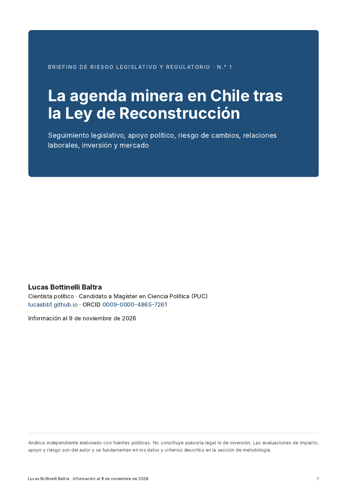

Consultoría
Análisis de riesgo político, legislativo y regulatorio
En esta sección publico análisis aplicados para organizaciones que necesitan anticipar cómo se mueve la agenda pública que las afecta. Uso las mismas fuentes y los mismos métodos de mis documentos de trabajo, pero con otra pregunta. La pregunta ya no es qué explica un fenómeno, sino qué puede cambiar, cuándo y con qué apoyo político.
Briefings

La agenda minera en Chile tras la Ley de Reconstrucción
- Para quién
- Empresas mineras, proveedores, inversionistas y gremios que siguen la regulación del sector en Chile.
- Qué contiene
- Seguimiento de diez proyectos de ley con impacto, apoyo observado y riesgo de cambios, apoyo de cada bloque en las votaciones clave, fichas de los proyectos en curso, relaciones laborales, inversión, mercado del cobre y una comparación con el RIGI argentino.
- Hallazgo central
- El cambio regulatorio de 2026 ya es ley, y el riesgo se traslada a los reglamentos y a la reforma ambiental. Los textos cambian mucho en el Congreso, y los diputados de distritos mineros se apartan de su partido en proyectos clave como los permisos y el royalty.
- Base
- Fichas de tramitación del Senado, votaciones de Sala de ambas cámaras, textos legales y prensa especializada, todo de acceso público.
Qué aporta este enfoque
- Indicadores medidos, no solo descritos. Cuánto texto de un proyecto sobrevive a la tramitación, cuánto demora, qué bloques lo apoyan y qué parlamentarios se apartan de su partido, calculados con los registros oficiales del Congreso.
- Riesgo con criterios explícitos. El impacto, el apoyo y el riesgo de cambios de cada proyecto se evalúan con reglas escritas en la metodología, de modo que el lector pueda discutirlas.
- Lectura territorial. El voto de los parlamentarios se cruza con el empleo de su distrito según el Censo 2024, lo que permite anticipar dónde un partido puede dividirse.
- Trazabilidad. Cada cifra remite a una fuente pública, y los datos y el código de la investigación de base se publican para que puedan verificarse.
Lo que estos briefings no cubren
Los briefings son un análisis político y legislativo con fecha de corte. No reemplazan el trabajo de una consultora sectorial especializada, que ofrece, entre otros servicios, los siguientes.
- Proyecciones propias de precios, oferta y demanda de minerales.
- Evaluación técnica y económica de proyectos, costos de operación y estudios de factibilidad.
- Seguimiento de permisos proyecto a proyecto ante el SEA, Sernageomin, la DGA y otros servicios.
- Información de primera fuente obtenida en la industria, con entrevistas y redes de contacto en las compañías.
- Análisis comparado sistemático de otras jurisdicciones mineras más allá de la referencia puntual a Argentina.
- Asesoría legal, tributaria o de inversión.
La propuesta es complementaria. Aporta la lectura del Congreso, los partidos y el territorio que condiciona el entorno en que esos otros análisis se aplican.
Áreas de trabajo
Los briefings son análisis independientes elaborados con fuentes públicas y no constituyen asesoría legal ni de inversión. Para conversar sobre un análisis a medida, escríbeme a lucasbottinelli4@gmail.com.